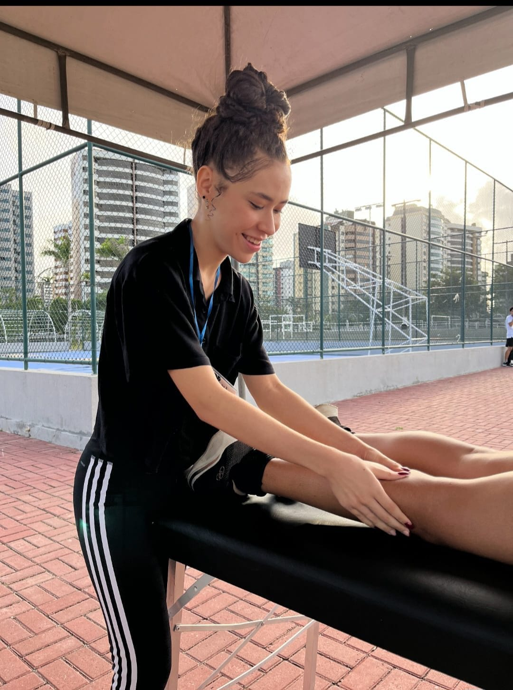

Massoterapia profissional
Relaxe o corpo, renove a mente
Sessões de massoterapia pensadas para você: alívio de tensões, cuidado com dores do dia a dia e um momento inteiro dedicado ao seu bem-estar.


Sobre
Letícia Luanny
Com formação em Fisioterapia e especialização em massoterapia, Letícia une técnica e cuidado em cada atendimento. O objetivo é simples: ajudar o seu corpo a relaxar, recuperar o equilíbrio e funcionar melhor — seja para aliviar o estresse da rotina, cuidar de tensões recorrentes ou dar suporte à prática esportiva.
Cada sessão começa com uma escuta atenta das suas necessidades, para que a técnica aplicada faça sentido para o seu corpo, do início ao fim.
Serviços
Técnicas para cada necessidade
Cada técnica é indicada para um objetivo diferente. Na primeira conversa, definimos juntas qual faz mais sentido para o seu momento.
Massagem relaxante
Técnica suave que reduz o estresse, alivia tensões musculares e proporciona sensação imediata de bem-estar.
Agendar esta sessãoMassagem com pedras vulcânicas
Pedras aquecidas relaxam a musculatura profunda e ajudam a melhorar a circulação sanguínea.
Agendar esta sessãoLiberação miofacial
Trabalho manual sobre a fáscia muscular para aliviar dores crônicas e devolver mobilidade ao corpo.
Agendar esta sessãoVentosaterapia
Técnica milenar que estimula a circulação, alivia dores e apoia a recuperação muscular.
Agendar esta sessãoMassagem desportiva
Indicada para atletas e praticantes de atividade física, auxilia na recuperação e prevenção de lesões.
Agendar esta sessãoNão sabe qual escolher?
Conte o que você está sentindo e eu te ajudo a encontrar a técnica ideal para o seu momento.
Falar no WhatsAppComo funciona
Simples do início ao fim
Chame no WhatsApp
Conte o que você está sentindo e tire suas dúvidas sobre a técnica ideal.
Agende seu horário
Combinamos juntas o melhor dia e horário para a sua sessão.
Aproveite sua sessão
É só relaxar — o cuidado com o seu corpo fica por nossa conta.

Diferenciais
Cuidado em cada sessão
Mais do que uma técnica, uma experiência pensada do começo ao fim para que você saia mais leve do que entrou.
- Avaliação individual antes de cada atendimento
- Ambiente pensado para o seu conforto
- Técnicas adaptadas ao seu objetivo
- Agendamento flexível, de acordo com a sua disponibilidade
Pronta(o) para cuidar de você?
Agende sua sessão de massoterapia e sinta a diferença de um atendimento pensado especialmente para o seu corpo.